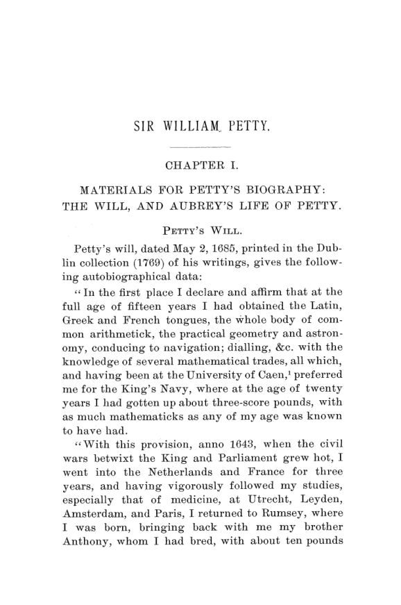

Bevan, 1894: William Petty, o agrimensor que contou a Inglaterra
Leitura: 10 min
Em 1894, Wilson Lloyd Bevan reconstituiu vida e ideias de William Petty: o médico que mediu a Irlanda, enriqueceu com terras confiscadas e fez da contagem um método de governo.


Em março de 1659, no Parlamento convocado por Richard Cromwell, Sir Jerome Sankey anunciou a acusação mais grave já feita contra um membro da Casa. O acusado tinha tido em mãos a distribuição de dois milhões de acres de terra irlandesa. Era médico, agrimensor e comissário ao mesmo tempo. O nome era Dr. Petty. Em 26 de março, o presidente da Casa mandou que ele respondesse a três acusações: negociar com debêntures, aceitar subornos e apropriar-se de dinheiro do Estado.
Petty chegou a Londres em 17 de abril, tomou posse no dia 19 e se defendeu no dia 21. O Parlamento foi dissolvido no dia seguinte, e o julgamento nunca aconteceu. A cena está em Sir William Petty: A Study in English Economic Literature, de Wilson Lloyd Bevan, publicado nas Publications of the American Economic Association em agosto de 1894. É uma tese de doutorado. No prefácio, Bevan diz que o estudante comum precisava se contentar com as poucas páginas que Roscher ou Cunningham dedicavam a Petty, e agradece a orientação do professor Brentano, da Universidade de Munique.
Por que gastar tantas páginas com a biografia?
Porque, diz Bevan, Petty não era um literato: sua própria carreira lhe deu o material dos folhetos. Nasceu em Rumsey, no Hampshire, em 26 de maio de 1623, filho de um fabricante de tecidos. Por volta dos quinze anos foi para Caen, na Normandia, fez pequeno comércio e se manteve sozinho. Estudou medicina nos Países Baixos e em Paris, onde leu Vesalius com Hobbes e, segundo Aubrey, passou uma semana vivendo de nozes. Voltou, doutorou-se em medicina em Oxford e foi professor de anatomia.
Em 10 de setembro de 1652 desembarcou em Waterford como médico do exército que reprimira a rebelião irlandesa. O exército e os credores privados que o haviam financiado, os chamados Irish Adventurers, seriam pagos com terras confiscadas. Para isso era preciso medi-las. O levantamento anterior era notoriamente errado. Petty se ofereceu para refazê-lo em treze meses e venceu a disputa com o agrimensor-geral.
Bevan nota que o trabalho foi rápido não por métodos científicos novos, mas pela direção cuidadosa de numerosos subordinados. O resto foi menos edificante. Havia 33.400 debêntures sobre terras irlandesas, das quais só 11.804 foram devolvidas; o atraso alimentou a especulação, e soldados pobres vendiam seus títulos a oficiais. O governo compensou salários atrasados de Petty com 6.000 acres e autorização para comprar debêntures. Vantagens tão notórias, escreve Bevan, dificilmente passariam despercebidas.
O biógrafo não é complacente. Fala da insensibilidade de Petty à honestidade estrita quando via chance de promover seus interesses, e registra que, depois de vencer um processo contra o duque de Ormond, ele se gabou de ter usado testemunhas capazes de jurar através de uma tábua de seis polegadas. Aubrey calculava que o levantamento lhe rendera na Irlanda propriedades de £ 18.000 por ano.
Quem escreveu as Observações sobre as listas de mortalidade?
O livro que fundou a estatística demográfica saiu em nome de John Graunt, amigo de Petty, com primeira edição datada de 1661 e provavelmente publicada em 1662. McCulloch, Roscher e Cunningham negavam a autoria a Petty. Bevan defende a tese contrária. Apoia-se em Evelyn e Aubrey, que a atribuíam a Petty, e em passagens paralelas com o Treatise on Taxes, também de 1662: a igualação das paróquias, o deslocamento de Londres para oeste, a distinção entre valor intrínseco e extrínseco da terra. É uma atribuição do autor, e ele mesmo admite não saber por que Petty esconderia a autoria.
Petty sabia que seus números eram frágeis. Numa carta a Aubrey, pede que ninguém tome suas contas sobre nascimentos e mortes como demonstração matemática. Nas observações sobre as listas de Dublin, admite que deduzir a população de batismos e enterros por conjecturas laboriosas era engenhoso, mas descabido. A saída que propôs foi institucional: modelos de listas com as informações que faltavam, coleta estatal de dados sobre comércio e agricultura e, segundo Bevan, a primeira proposta de observação meteorológica geral.
De onde vinha a riqueza, para Petty?
“o trabalho é o pai e princípio ativo da riqueza, assim como as terras são a mãe” (“labor is the Father and active principle of wealth, as lands are the Mother”)
A terra decide o destino de um país, mas o trabalho é o fator principal. E nem todo trabalho vale o mesmo: ganha-se mais com manufatura do que com lavoura, e mais com comércio do que com manufatura. O salário de um lavrador era um terço do de um marinheiro, que Petty via como navegador, mercador e soldado ao mesmo tempo. A Holanda era o modelo, por ter se livrado do que ele chamava de ofício patriarcal de guardar vacas.
Daí a defesa das cidades grandes. Mesmo uma Londres sete vezes maior poderia ser abastecida de carne e bebida num raio de 35 milhas, e a manufatura ganharia com a divisão do trabalho. O exemplo é o relógio: se um homem faz as rodas, outro a mola, outro grava o mostrador e outro faz a caixa, o relógio sai melhor e mais barato. A mesma lógica o levava a propostas brutais, como transplantar os irlandeses nativos para a Inglaterra.
Na teoria do valor, Petty mede tudo em trabalho. Cem homens trabalhando dez anos em trigo e outros cem o mesmo tempo em prata: o produto líquido da prata é o preço do produto líquido do trigo. Mais tarde, para tirar o trabalho da definição de renda, propôs como medida comum o alimento de um dia, com o exemplo de um bezerro desmamado posto em dois acres de pasto. Chegou a estimar o valor monetário de cada inglês, tentativa que Bevan trata como exemplo cru de insensibilidade.
O que Petty dizia sobre moeda e impostos?
Moeda, para Petty, era talvez a centésima parte da riqueza de uma nação; o resto eram terras, casas, navios e bens. A quantidade necessária dependia da frequência dos pagamentos. Se as rendas da terra somassem oito milhões por ano, pagas semestralmente, bastariam quatro milhões em moeda. Proibir a exportação de dinheiro lhe parecia inútil: os países que proibiam não tinham moeda, e os que permitiam eram ricos.
Desvalorizar a moeda era, nas palavras resumidas por Bevan, um imposto sobre os credores do Estado, ou um desfalque; uma bancarrota declarada seria preferível. Juro era recompensa por abrir mão do uso do próprio dinheiro, e não havia razão para proibi-lo. Juro baixo era efeito, não causa, da prosperidade, ponto em que Bevan põe Petty muito acima de Child.
O Treatise on Taxes and Contributions é, para Bevan, a obra mais sistemática de Petty e mais ambiciosa que qualquer texto inglês da época sobre finanças. Um exemplo de incidência: dois donos de terras iguais, um com arrendamento fixo de £ 20 por 21 anos e outro livre. Com um imposto de um quinto, o segundo não aluga por menos de £ 25; o primeiro fica com £ 16. Só perde quem tem renda já contratada.
“um imposto sobre tolos infelizes e presunçosos” (“a tax upon unfortunate self-conceited fools”)
A frase define a loteria estatal, que ele aceitava com moderação. O imposto que preferia era o excise, sobre o consumo, pela justiça natural de cada um pagar segundo o que de fato desfruta. Concentrá-lo só na cerveja seria injusto, porque trabalhadores pobres às vezes bebiam o dobro dos cavalheiros. Entre os excises, o melhor lhe parecia o imposto sobre lareiras, desde que pequeno.
Petty antecipou Smith e Ricardo?
Bevan responde com cautela. O método de Petty vinha mais de Hobbes que de Bacon: preferência pela prova matemática, uso frequente de exemplos fictícios para sustentar princípios obtidos por dedução. A afinidade com Ricardo é forte. Os dois tinham formação matemática, fizeram grandes fortunas e tratavam o homem como unidade de trabalho, quase como símbolo algébrico. Já falar em Smith antecipado por Petty, escreve, seria coisa de entusiasta, embora boa parte do primeiro livro da Riqueza das Nações apareça em forma embrionária nos folhetos de Petty, e a definição de juro de Smith seja quase idêntica à dele.
“é o pai da ciência econômica inglesa” (“he is the father of English economic science”)
O título vem com ressalvas. Bevan vê em Petty dois elementos: o político preso aos preconceitos da Restauração e o pesquisador que aplica dados estatísticos e métodos das ciências à economia. É o segundo que justifica o elogio. Petty morreu em Londres em 16 de dezembro de 1687 e foi enterrado em Rumsey, ao lado dos pais.
Na minha leitura
Na minha leitura, o livro de Bevan vale menos pela história das ideias do que pelo retrato de um economista dentro do Estado. Petty mediu a Irlanda para que ela pudesse ser repartida, e lucrou com a repartição. A mesma régua que produziu o primeiro cadastro moderno serviu a confiscos e a uma especulação com títulos que ele, como funcionário, deveria ter evitado. O episódio lembra que dado público não é neutro: quem controla a medição controla parte da distribuição.
Há também uma lição de método. Petty pedia números, peso e medida, mas admitia que suas estimativas eram conjecturas, e propunha melhorar a coleta em vez de esconder a fragilidade. Ao mesmo tempo, usava essas conjecturas para orientar a política do Estado. O dilema continua o mesmo: decidir com o dado imperfeito disponível ou esperar o dado bom que ainda não existe.
Glossário
- aritmética política
- nome dado por Petty ao uso de números, pesos e medidas para analisar a população, a riqueza e as finanças de um Estado.
- Bills of Mortality
- listas semanais de enterros e batismos das paróquias de Londres, base do livro atribuído a Graunt.
- Down Survey
- levantamento cadastral da Irlanda dirigido por Petty, assim chamado porque as divisões do terreno eram marcadas no mapa.
- debênture
- título de crédito dado a soldados e credores, resgatável em terra confiscada.
- excise
- imposto sobre o consumo de mercadorias, cobrado quando o bem está pronto para uso.
- incidência
- quem de fato arca com um imposto, que pode ser diferente de quem o recolhe.
- capitação
- imposto de valor fixo por pessoa.
Fontes
- [Sir William Petty: A Study in English Economic Literature]: Introduction- Bibliographical Notices (pp. 9–12). JSTOR · Internet Archive (PDF)
- Sir William Petty: A Study in English Economic Literature (pp. 13–102). JSTOR · Internet Archive (PDF)
- Sumário da edição no JSTOR: Publications of the American Economic Association, vol. 9, nº 4.
Documento em domínio público (EUA, publicado antes de 1931), via JSTOR Early Journal Content e Internet Archive. Resumo e comentário do autor deste site, sem afiliação com a American Economic Association. Encontrou um erro? Escreva: a correção é publicada no próprio texto, com data.
← Nº 42 · Cooley, 1894: as cidades nascem onde a carga para Nº 44 · Nova York, 1894: a greve de Pullman, o papa e o limite da lei →